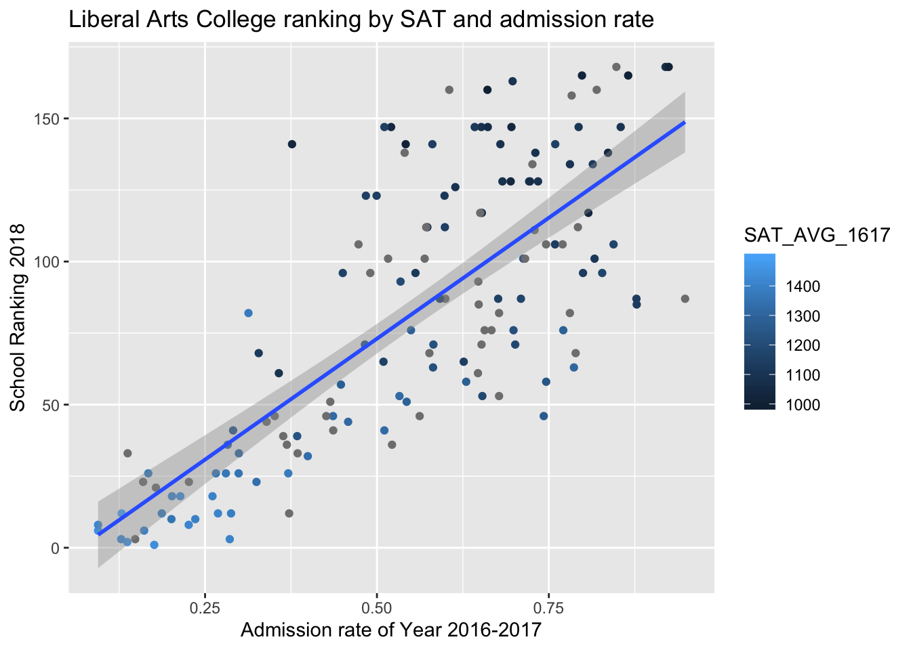

Chapter 7 Bayesian Models Part 1.2 Liberal Arts
The real question: why do we repeat the process on liberal arts colleges again?
Answer: Liberal arts colleges fall under an entirely separate ranking list and often have different characteristics (e.g. size and location, private vs public). We repeat the process to observe the similarity and differences between universities and liberal arts colleges.
7.1 Model 0
Ranking by one year of SAT score: with intuition from \(\text{hist}(\sqrt{1/rgamma(10000,a,b)})\).
7.1.1 First Impression
It appears to be a linear relationship!
7.1.2 Building the model
Let \(Y_i\) denote the predicted ranking of a liberal arts college in Year 2018. \(Y_i\) is predicted by
\[X_i = \text{student mean SAT score of Year 2016-17}\]
Our model can be written as:
\[\begin{align} Y_i & \sim N(\beta_0 + \beta_1X_i,\tau_0) \\ \beta_0 & \sim N(300,250000^{-1}) \\ \beta_1 & \sim N(0,100^{-1}) \\ \tau_0 & \sim Gamma(7,4000) \end{align}\]
# DEFINE the model
liberal_model_0 <- "model{
for(i in 1:length(y)) {
# Data model
y[i] ~ dnorm(beta0 + beta1 * x[i], tau0)
}
# Priors for theta
beta0 ~ dnorm(300,1/250000)
beta1 ~ dnorm(0, 1/100)
tau0 ~ dgamma(7,4000)
}"
# COMPILE the model
model_data4 <- data.frame(y = full_LiberalArts$Y2018, x = full_LiberalArts$SAT_AVG_1617)
model_data4 <- na.omit(model_data4)
liberal_jags_0 <- jags.model(textConnection(liberal_model_0),
data = list(y = model_data4$y, x = model_data4$x),
inits = list(.RNG.name = "base::Wichmann-Hill", .RNG.seed = 454))## Compiling model graph
## Resolving undeclared variables
## Allocating nodes
## Graph information:
## Observed stochastic nodes: 101
## Unobserved stochastic nodes: 3
## Total graph size: 396
##
## Initializing model# SIMULATE the model
liberal_sim_0 <- coda.samples(liberal_jags_0,
variable.names = c("beta0", "beta1", "tau0"),
n.iter = 10000)
# STORE the chains in a data frame
liberal_chains_0 <- data.frame(liberal_sim_0[[1]])7.1.3 Model summary
summary(liberal_sim_0)##
## Iterations = 1:10000
## Thinning interval = 1
## Number of chains = 1
## Sample size per chain = 10000
##
## 1. Empirical mean and standard deviation for each variable,
## plus standard error of the mean:
##
## Mean SD Naive SE Time-series SE
## beta0 -0.614922 1.583e+01 1.583e-01 2.144e+00
## beta1 0.021724 1.296e-02 1.296e-04 1.767e-03
## tau0 0.003849 5.113e-04 5.113e-06 5.914e-06
##
## 2. Quantiles for each variable:
##
## 2.5% 25% 50% 75% 97.5%
## beta0 -31.655750 -11.608615 -1.094746 10.751901 29.460108
## beta1 -0.003149 0.012368 0.022064 0.030707 0.047298
## tau0 0.002903 0.003495 0.003829 0.004177 0.0049077.1.4 Posterior inference
For an unknown liberal arts college with a mean student SAT score of 1450 (e.g. Bvictor College), we could predict its ranking from our rjags simulation.
liberal_chains_0 <- liberal_chains_0 %>%
mutate(ranking_new = rnorm(10000, mean = beta0 + beta1*1450, sd = (1/tau0)^(1/2)))liberal_chains_0 %>%
summarize(quantile(ranking_new,0.025),quantile(ranking_new,0.975))## quantile(ranking_new, 0.025) quantile(ranking_new, 0.975)
## 1 -1.732125 63.32857A \(95\%\) credible interval is \((-1,63)\). Due to restrictions of this one-predictor model, we expect to see an improvement in later models.
7.2 Model 1
Ranking by three years of SAT score. This is the best Bayesian model one can ever come up with.
Just Kidding.
As we discussed earlier in Chapter 6, Model 1 is overwhelmingly multicollinear; Model 1 is a sufficient sustitute if we want to look at the relationship between ranking and SAT score.
7.3 Model 2
2018 U.S. News Ranking by average SAT score and admissions rate of Year 2017.
7.3.1 First Impression

There’s a strong positive relationship between the admission rate of colleges and college ranking (a larger number in college ranking is worse). From color gradient of points, we can see that schools with higher SAT averages tend to be better ranked.
7.3.2 Building the model
7.3.2.1 Step 1
A linear model provides some intuition about how the priors might be constructed.
summary(lm(full_LiberalArts$Y2018 ~ full_LiberalArts$SAT_AVG_1617 + full_LiberalArts$ADM_RATE_1617))##
## Call:
## lm(formula = full_LiberalArts$Y2018 ~ full_LiberalArts$SAT_AVG_1617 +
## full_LiberalArts$ADM_RATE_1617)
##
## Residuals:
## Min 1Q Median 3Q Max
## -50.679 -9.613 -0.042 10.169 59.538
##
## Coefficients:
## Estimate Std. Error t value Pr(>|t|)
## (Intercept) 430.23894 34.40379 12.506 <2e-16 ***
## full_LiberalArts$SAT_AVG_1617 -0.30402 0.02336 -13.012 <2e-16 ***
## full_LiberalArts$ADM_RATE_1617 37.57722 13.59032 2.765 0.0068 **
## ---
## Signif. codes: 0 '***' 0.001 '**' 0.01 '*' 0.05 '.' 0.1 ' ' 1
##
## Residual standard error: 19.48 on 98 degrees of freedom
## (48 observations deleted due to missingness)
## Multiple R-squared: 0.8577, Adjusted R-squared: 0.8548
## F-statistic: 295.3 on 2 and 98 DF, p-value: < 2.2e-167.3.2.2 Step 2
Next, we construct a hierarchical model of
\[Y_i = \text{the predicted 2018 ranking of a liberal arts college}\]
by
\[\begin{align} X_{1i} & = \text{student mean SAT score of Year 2016-17} \\ X_{2i} & = \text{admissions rate during Year 2016-17} \end{align}\]
\[\begin{align} Y_i & \sim N(\beta_{0i} + \beta_{1i}X_{1i} + \beta_{2i}X_{2i},\tau_{\text{big}[i]}) \\ \beta_{0i} & \sim N(b_0,\tau_0) \\ \beta_{1i} & \sim N(b_1,\tau_1) \\ \beta_{2i} & \sim N(b_2,\tau_2) \\ \tau_{\text{big}[i]} & \sim Gamma(s,r) \\ b_0 & \sim N(180,4000^{-1}) \\ \tau_0 & \sim N(30, 1/9) \\ b_1 & \sim N(-0.1,0.001^{-1}) \\ \tau_1 & \sim N(1000, 0.001^{-1}) \\ b_2 & \sim N(80,100^{-1}) \\ \tau_2 & \sim N(10, 1) \\ s & \sim N(7,1) \\ r & \sim N(10000, 10000^{-1}) \end{align}\]
liberal_model_2 <- "model{
# Data: observations
for(i in 1:length(y)) {
y[i] ~ dnorm(beta0[i] + beta1[i]*x1[i] + beta2[i]*x2[i], tau_big[i])
# Data: subjects
beta0[i] ~ dnorm(b0, tau0)
beta1[i] ~ dnorm(b1,tau1)
beta2[i] ~ dnorm(b2,tau2)
tau_big[i] ~ dgamma(s,r)
}
# Hyperpriors
b0 ~ dnorm(180,1/4000)
tau0 ~ dnorm(30, 1/9)
b1 ~ dnorm(-0.1,1000)
tau1 ~ dnorm(1000,1000)
b2 ~ dnorm(80,1/100)
tau2 ~ dnorm(10,1)
s ~ dnorm(7,1)
r ~ dnorm(10000, 1/10000)
}"
# COMPILE
y <- full_LiberalArts$Y2018
model_data5 <- as.data.frame(cbind(y, x1 = full_LiberalArts$SAT_AVG_1617, x2 = full_LiberalArts$ADM_RATE_1617))
model_data5 <- na.omit(model_data5)
liberal_jags_2 <- jags.model(textConnection(liberal_model_2),
data = list(y = model_data5$y, x1 = model_data5$x1, x2 = model_data5$x2),
inits=list(.RNG.name = "base::Wichmann-Hill", .RNG.seed = 454))## Compiling model graph
## Resolving undeclared variables
## Allocating nodes
## Graph information:
## Observed stochastic nodes: 101
## Unobserved stochastic nodes: 412
## Total graph size: 1035
##
## Initializing model# SIMULATE the model
liberal_sim_2 <- coda.samples(liberal_jags_2,
variable.names = c("b0","tau0","b1","tau1","b2","tau2","s","r"),
n.iter = 10000)
# STORE the chains in a data frame
liberal_chains_2 <- data.frame(liberal_sim_2[[1]])7.3.3 Model summary
summary(liberal_sim_2)##
## Iterations = 1001:11000
## Thinning interval = 1
## Number of chains = 1
## Sample size per chain = 10000
##
## 1. Empirical mean and standard deviation for each variable,
## plus standard error of the mean:
##
## Mean SD Naive SE Time-series SE
## b0 178.4834 0.56301 0.0056301 0.1895714
## b1 -0.1090 0.02947 0.0002947 0.0039424
## b2 43.1793 5.95589 0.0595589 4.0299101
## r 10016.5430 99.18842 0.9918842 1.2203209
## s 0.1517 0.01632 0.0001632 0.0009056
## tau0 30.1001 3.00404 0.0300404 0.0510047
## tau1 999.9994 0.03244 0.0003244 0.0004133
## tau2 10.0017 1.01154 0.0101154 0.0176700
##
## 2. Quantiles for each variable:
##
## 2.5% 25% 50% 75% 97.5%
## b0 177.2556 178.0642 178.5477 1.789e+02 1.793e+02
## b1 -0.1706 -0.1287 -0.1086 -8.759e-02 -5.609e-02
## b2 33.4737 38.3188 42.4722 4.779e+01 5.528e+01
## r 9819.6765 9950.7472 10016.6172 1.008e+04 1.022e+04
## s 0.1220 0.1402 0.1511 1.627e-01 1.850e-01
## tau0 24.2727 28.0611 30.0777 3.214e+01 3.610e+01
## tau1 999.9360 999.9776 999.9993 1.000e+03 1.000e+03
## tau2 8.0292 9.3206 9.9837 1.067e+01 1.202e+017.3.4 Posterior inference
For an unknown Liberal Arts College with student mean SAT score of 1450 and an admission rate of \(30\%\) (e.g. Dvictor college), we could predict its ranking from our rjags simulation.
liberal_chains_2 <- liberal_chains_2 %>%
mutate(beta0_new = rnorm(10000,b0,(1/tau0)^(1/2))) %>%
mutate(beta1_new = rnorm(10000,b1,(1/tau1)^(1/2))) %>%
mutate(beta2_new = rnorm(10000,b2,(1/tau2)^(1/2))) %>%
mutate(tau_big_new = rgamma(10000,s,r)) %>%
mutate(ranking_new = rnorm(10000, mean = beta0_new + beta1_new * 1450 + beta2_new * 0.3, sd = (1/tau_big_new)^(1/2)))liberal_chains_2 %>%
summarize(quantile(ranking_new,0.025),quantile(ranking_new,0.975))## quantile(ranking_new, 0.025) quantile(ranking_new, 0.975)
## 1 -1721919 1850909A \(95\%\) credible interval is not pretty! This means that we over-evaluate the variability of a lot of predictors.
7.4 Future steps
Given the problem that we encounter at Dvictor College, we also need to pay attention to narrowing the variability in our Bayesian models. (which really teaches us a lesson: simple is good; a complicated hierarchical model is not always helpful!)